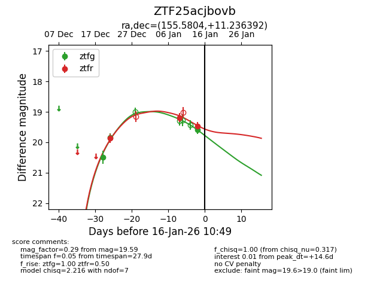
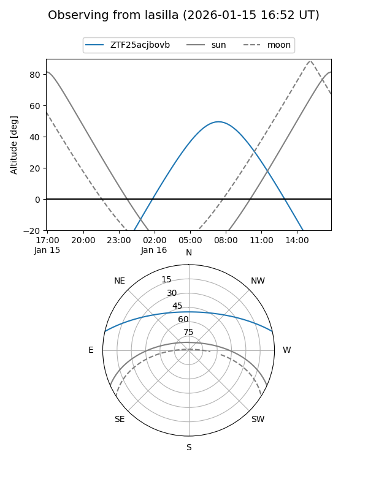
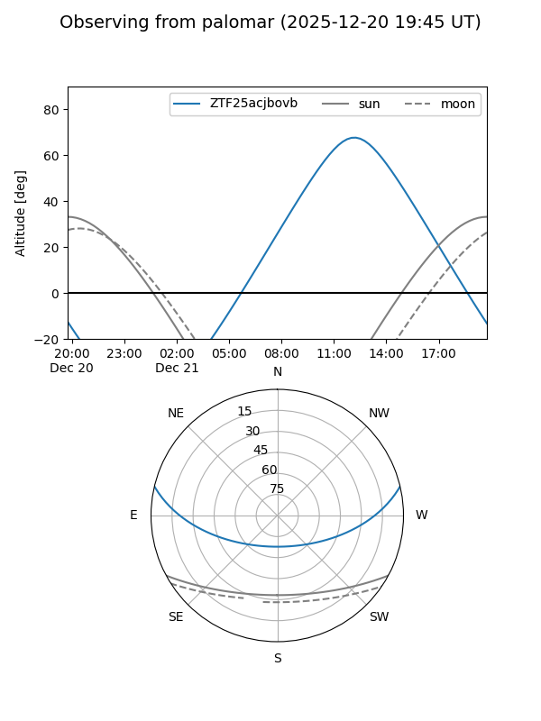

ZTF25acjbovb
Target ZTF25acjbovb at 2026-01-09 12:49
Aliases and brokers:
FINK: link
Lasair: link
ALeRCE: link
alt names
ZTF25acjbovb (ztf,fink_ztf)
Coordinates:
equatorial (ra, dec) = 155.5804,+11.23639
equatorial (HMS+DMS) = 10:22:19.29,+11:14:11.01
galactic (l, b) = (230.0040,+51.57627)
Flags:
Photometry:
last ztfg=19.85, ztfr=19.19
2 ztfg, 2 ztfr detections
Lightcurve

Visibility


Additional plots